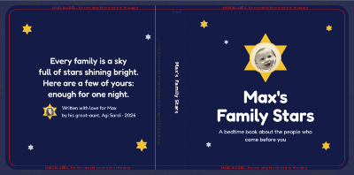
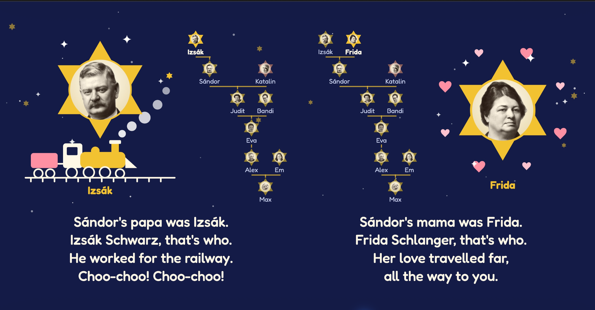

Gather the pieces
Start with a letter, an interview, a photograph with a caption, or a memory you’ve written down. Identify the people and moments you want to preserve.
Turn the letters, photographs, recordings, and memories you treasure into a family story the next generation can explore.
Who it’s for: Anyone who wants to preserve a loved one’s memories, document family history, or gather stories for future generations.
What you’ll create: Begin a family narrative, illustrated book, or interactive resource using your own source materials. Explore the full process and examples below.
Format: Hands-on workshop. See the session details below for the scheduled class and what to bring.


Real family stories. Created with care. Preserved in print.
I began with my mother’s testimony, family photographs, and the stories I wanted to pass on. Along the way, I created illustrated books about Jutka’s life and our Schwarz–Szőnyi family roots. Now I’m sharing the process with you.
You don’t need to begin with a perfect archive. Begin with one person, one memory, and the wish to keep their story alive.
In this course, we use AI through practice, not just theory. We’ll explore how NotebookLM can help you work with your own source materials, ask questions, and begin shaping a meaningful remembrance project.
Start with a letter, an interview, a photograph with a caption, or a memory you’ve written down. Identify the people and moments you want to preserve.
Use NotebookLM to ask questions across your materials. Follow answers back to the sources and distinguish documented facts from recollections.
Begin an illustrated narrative, a family history, or a resource relatives can explore. Agi’s books show how a project can grow through revision into print.
These books grew out of my own remembrance work. Explore the current editions alongside The Heart and the Head, or open the earlier revisions below to see how the stories developed.
The Schwarz–Szőnyi family’s Transylvanian roots and Dr. Zoltán Sándor Szőnyi’s journey from young painter to physician. Family memories, photographs, testimony, and archival research preserve the people behind the names.
My mother, Judith Sardi, née Szőnyi, remembered a childhood near Szeged interrupted by the Holocaust. Her testimony and family memories preserve her resourcefulness and humanity for a new generation.
The glossy and matte hardcovers are two print formats of the same revision.

An earlier telling of my mother Jutka’s Holocaust experiences in 1944–1945. Judith Sardi, née Szőnyi, remembered these years with the perspective of a survivor and the vivid memories of the young girl she had been. This family biography preserves her story for those who come after her.
For the revised account, explore Jutka — A Story of Survival above.

A bedtime book about the people who came before you. Written with love for Max by his great-aunt, Agi Sardi, in 2026.

Purchases take place on Bookemon. Visit the book’s listing for current prices, available formats, shipping, and ordering details.
These are earlier versions, retained as part of the project’s history. Choose the current editions above for the revised accounts.

Earlier edition · October 4, 2026 · 28 pages · Glossy hardcover
Read this version ↗
Earlier version · September 5, 2026 · 36 pages · Glossy softcover
Read this version ↗This is for lifelong learners who want to remember a loved one, document family history, or collect stories from someone who can still tell them.
Start small: one person and a few materials you’re comfortable working with. You can build a meaningful project step by step.
AI can help organize and explore what you have. The original sources, your judgment, and your family’s voices remain at the heart of the story.
The course features Google’s NotebookLM, with practical examples from Agi’s family projects. Explore NotebookLM ↗
No. A few letters, an interview transcript, or written memories can give you a place to begin.
No. They’re examples of Agi’s process and optional purchases. Use the previews to explore them.
Yes—that is one possible direction for your project. These examples show a route from source materials to an illustrated book printed through Bookemon.
The Museum of Jewish Heritage – A Living Memorial to the Holocaust offers an interactive experience with prerecorded testimony from ten Holocaust survivors. Visitors can ask questions about their lives before, during, and after the Holocaust, and AI helps connect those questions with recorded responses.
Available online and at the museum, this project offers an example of how technology can help preserve testimony and invite the next generation into a conversation about history. It was developed with USC Shoah Foundation and USC Libraries.
The responses in this museum experience come from prerecorded survivor interviews.
Download Zac’s interaction videoAn independent museum resource, included as a reference for our class.
My mother’s recorded memories are at the heart of this project. Hearing Judith tell her story in her own voice connects our family’s past with the generations who will carry it forward.
Watch both parts of her testimony and see the original source that helped inspire our family books and this course.
Join me to explore how AI can help preserve the people and memories you treasure.
Interactive AI Memorial Class REDUX · Bring an internet-connected laptop or tablet and a Google account for NotebookLM.
Interested in bringing this course to your organization? Get in touch to discuss a workshop for your community.